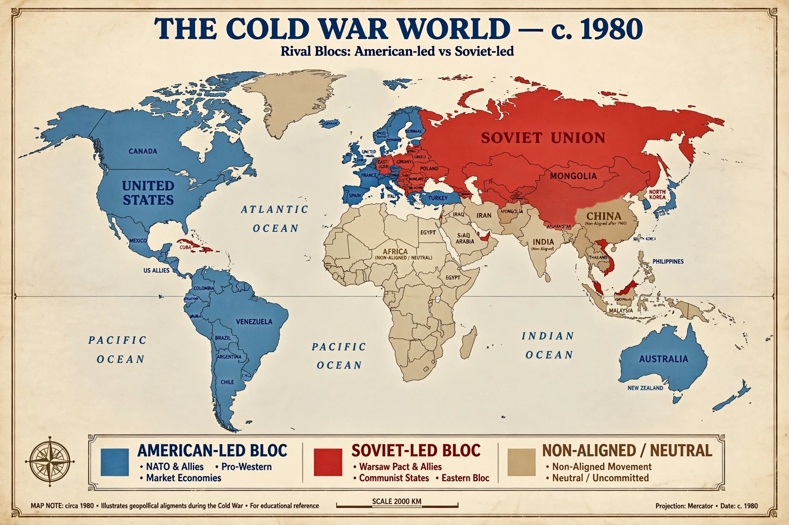

Neorealism, or structural realism, is a theory of international relations that emphasises the constraints imposed on states by the structure of the international system — in particular anarchy and the distribution of power. It was set out by Kenneth Waltz in his book Theory of International Politics (1979), in deliberate contrast to the classical realism of Hans Morgenthau, which located the causes of state behaviour in human nature and the decisions of statesmen.
For Waltz, a political system has three elements: an ordering principle, the character of its units, and the distribution of capabilities across them. The international ordering principle is anarchy — no authority stands above states. Units (states) are functionally alike, each performing the same basic tasks, so what varies, and what explains outcomes, is the third element: how capabilities are distributed, whether the system is unipolar, bipolar or multipolar. States seek above all to survive; power is a means, not an end. Waltz argued that bipolar systems, such as the Cold War confrontation between the United States and the Soviet Union, are the most stable, because balancing is internal and miscalculations are fewer.
Neorealism has been criticised for failing to predict or explain the peaceful end of the Cold War, for neglecting domestic politics, ideas and international institutions, and for treating states as undifferentiated "like units". Neoclassical realism arose partly in response, reintroducing domestic variables between structure and policy. Nevertheless, structural realism remains a benchmark theory in the discipline and in debates over the rise of China and the return of great-power competition.
Anarchy (international relations) · Hans Morgenthau · Unilateralism